O mundo fascinante dos Coleoptera
Com mais de 400 mil espécies descritas, os besouros são a ordem animal mais diversificada do planeta.
Sobre os Besouros
O que são os besouros?
Os besouros formam a ordem Coleoptera. O nome vem do grego koleos (bainha) e pteron (asa). Ele se refere ao par de asas anteriores duras, chamadas élitros. Os élitros protegem as asas membranosas por baixo. Os besouros também são insetos holometábolos: passam por metamorfose completa — ovo, larva, pupa e adulto.
Já foram catalogadas mais que 400 mil espécies. Elas somam cerca de 40% dos insetos conhecidos. Também representam um quarto das espécies animais descritas pela ciência. Os besouros vivem em quase todo o planeta. Só não aparecem nos oceanos e nas regiões polares mais extremas.
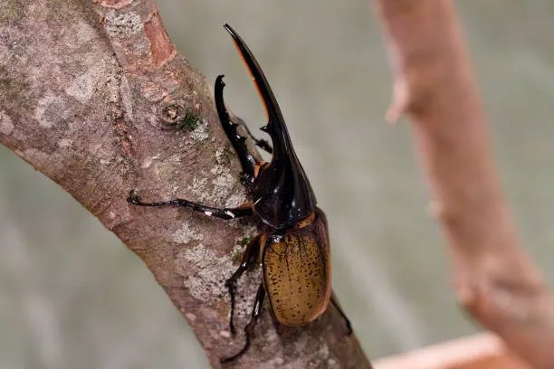
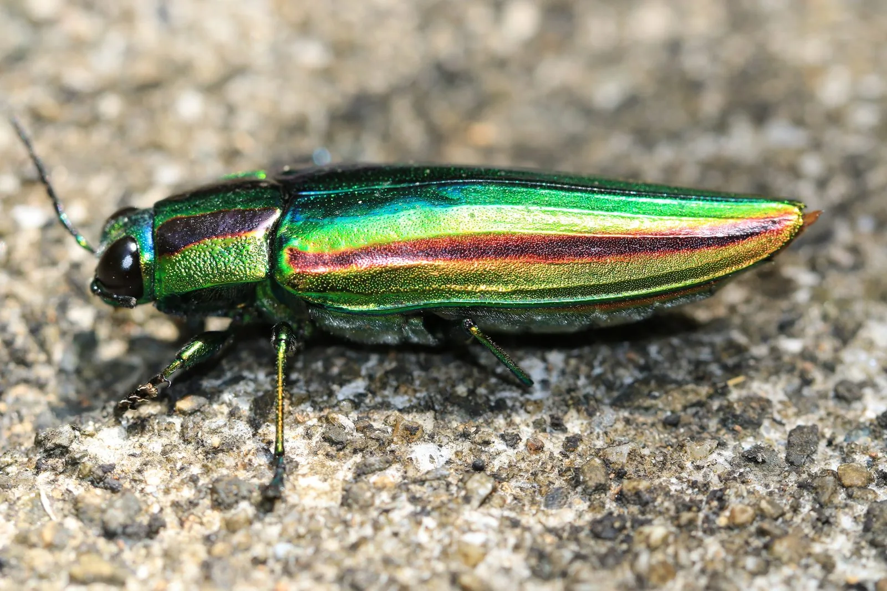
Classificação taxonômica
Os besouros pertencem ao filo Arthropoda e à classe Insecta. A ordem Coleoptera tem quatro subordens principais: Adephaga, Archostemata, Myxophaga e Polyphaga. A maior é a Polyphaga. Ela reúne mais que 90% das espécies.
| Nível taxonômico | Classificação |
|---|---|
| Reino | Animalia |
| Filo | Arthropoda |
| Classe | Insecta |
| Ordem | Coleoptera |
| Subordens | Adephaga, Archostemata, Myxophaga, Polyphaga |
Alimentação e habitat
Os besouros têm uma dieta muito variada. Há espécies herbívoras, predadoras, detritívoras, fungívoras e coprófagas. Essa variedade ajuda a explicar o sucesso do grupo.
Eles ocupam muitos ambientes. Vivem em florestas tropicais, desertos, campos, rios, lagos, cavernas e solos agrícolas.
Importância ecológica e econômica
Os besouros têm papéis ecológicos essenciais. Atuam como polinizadores, decompositores e predadores. Assim, ajudam a reciclar nutrientes e a controlar pragas. As joaninhas (família Coccinellidae) são um bom exemplo. A agricultura usa esses insetos para combater pulgões e cochonilhas.
💡 Você sabia?
O escaravelho-do-esterco (Scarabaeus sacer) era sagrado no Egito antigo. Ele rola bolas de esterco até 10 vezes o próprio peso. À noite, usa a Via Láctea como bússola para andar em linha reta.
Galeria de Fotos
A variedade visual dos besouros impressiona. Veja abaixo uma seleção com espécies de várias partes do mundo.
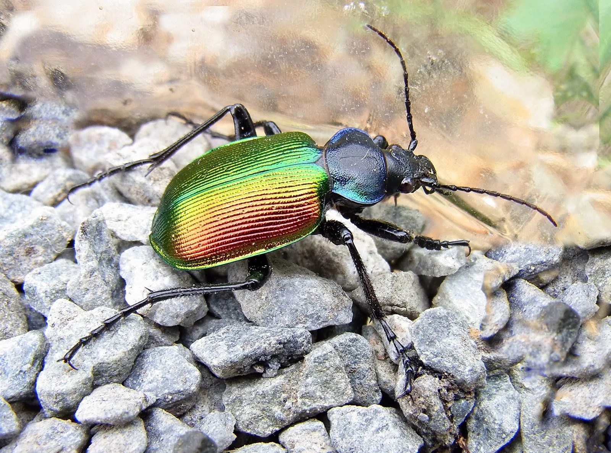
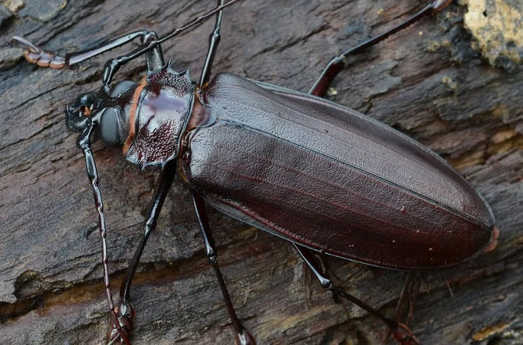
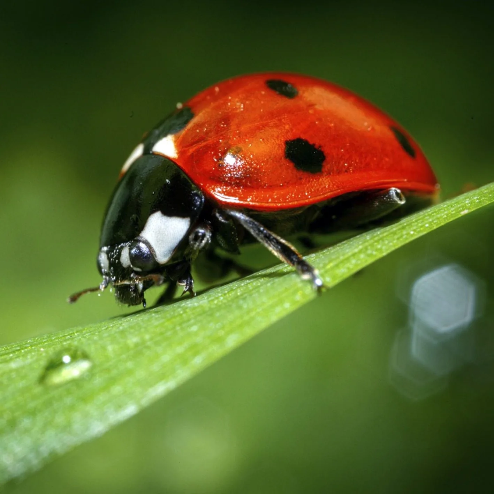
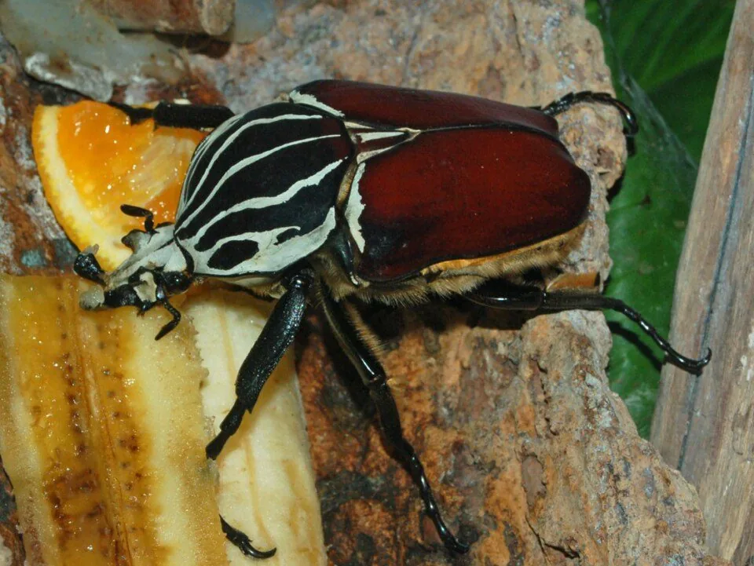
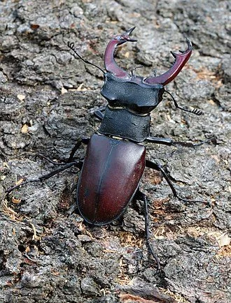
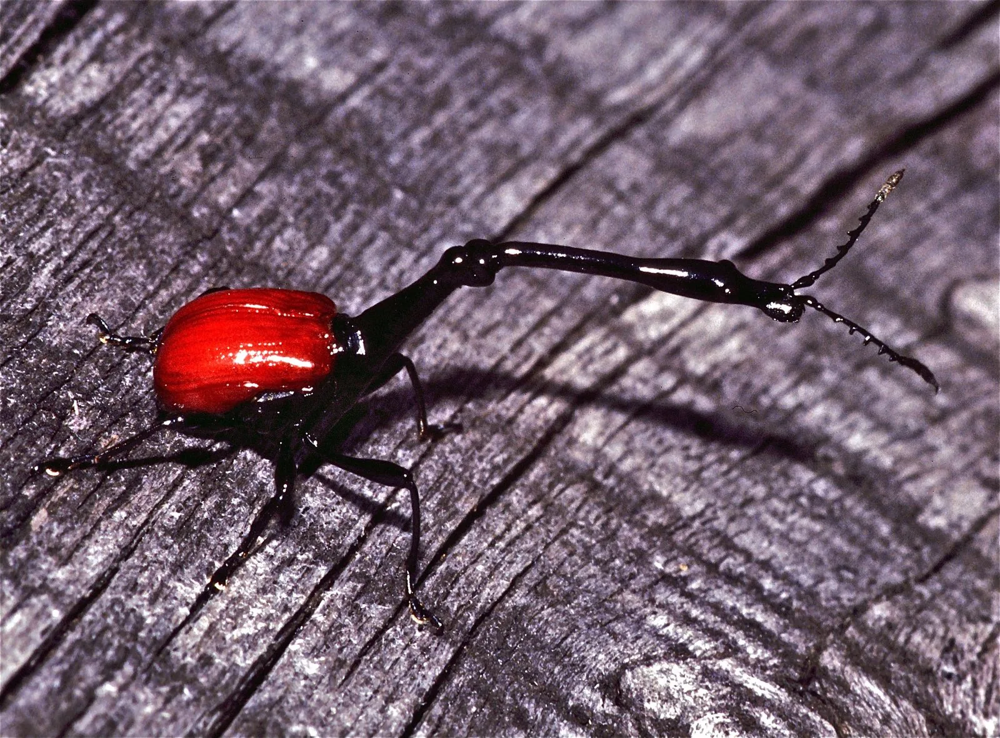
Referências
- GRIMALDI, D.; ENGEL, M. S. Evolution of the Insects. Cambridge University Press, 2005.
- LAWRENCE, J. F.; ŚLIPIŃSKI, A. Australian Beetles. CSIRO Publishing, 2013.
- WIKIPÉDIA. Coleoptera. Disponível em: https://pt.wikipedia.org/wiki/Coleoptera. Acesso em: maio 2026.
- BUGGUIDE. Order Coleoptera. Disponível em: https://bugguide.net/node/view/59. Acesso em: maio 2026.
- WIKIMEDIA SPECIES. Calosoma sycophanta. Disponível em: https://species.wikimedia.org/wiki/Calosoma_sycophanta. Acesso em: maio 2026.
- WIKIPÉDIA. Trachelophorus giraffa. Disponível em: https://pt.wikipedia.org/wiki/Trachelophorus_giraffa. Acesso em: maio 2026.
- WIKIPÉDIA. Vaca-loura. Disponível em: https://pt.wikipedia.org/wiki/Vaca-loura. Acesso em: maio 2026.
- PORTAL AMAZÔNIA. Besouro gigante. Disponível em: https://portalamazonia.com/amazonia-de-a-a-z/b/besouro-gigante/. Acesso em: maio 2026.
- ANTDERGROUND. Coccinella septempunctata. Disponível em: https://antderground.com/pt-br/produto/coccinella-septempunctata/. Acesso em: maio 2026.
- ISTOCK. Dynastes hercules. Disponível em: https://www.istockphoto.com/br/fotos/dynastes-hercules. Acesso em: maio 2026.
Morfologia
O corpo do besouro adulto tem três partes: cabeça, tórax e abdome. Cada parte traz adaptações próprias. Juntas, elas explicam o sucesso do grupo.
Cabeça
Abriga os olhos compostos, antenas articuladas e peças bucais mastigadoras. As antenas variam de filiformes a lameladas conforme a espécie.
Élitros
Asas anteriores duras e rígidas. Elas se unem no meio do dorso e protegem as asas membranosas dobradas por baixo.
Tórax
Dividido em protórax, mesotórax e metatórax. Carrega três pares de patas articuladas e os dois pares de asas. O pronoto é uma característica diagnóstica.
Asas membranosas
Dobradas sob os élitros, são usadas para o voo. Algumas espécies da família Carabidae são completamente ápteras e não voam.
Abdome
Composto por segmentos flexíveis que abrigam os órgãos digestivos e reprodutivos. Em geral protegido pelos élitros na face dorsal.
Patas
São seis patas articuladas. O número de segmentos do tarso (a fórmula tarsal) muda conforme o grupo e ajuda a identificar famílias.
Metamorfose completa (holometabolia)
Os besouros passam por quatro fases de vida: ovo, larva, pupa e adulto (imago). As larvas, muitas vezes chamadas de corós, são bem diferentes dos adultos no corpo e nos hábitos.
| Subordem | Fórmula tarsal | Exemplo de família |
|---|---|---|
| Adephaga | 5-5-5 | Carabidae |
| Polyphaga | Variável (3-3-3 a 5-5-5) | Scarabaeidae, Cerambycidae |
| Myxophaga | 3-3-3 | Torridincolidae |
| Archostemata | 5-5-5 | Cupedidae |
Curiosidades
Os besouros guardam milhões de anos de evolução em corpos pequenos. Veja alguns fatos surpreendentes sobre a ordem mais diversa do reino animal.
Bússola galáctica
O escaravelho-do-esterco (Scarabaeus sacer) usa a Via Láctea para rolar suas bolas de esterco em linha reta à noite — o único inseto conhecido a navegar pelas estrelas.
Besouro-bombardeiro
Brachinus spp. disparam um jato de líquido fervente (100 °C) contra predadores, misturando hidroquinona e peróxido de hidrogênio em uma câmara abdominal.
Colecionador de água
O besouro do deserto do Namibe (Stenocara gracilipes) coleta água da neblina noturna por protuberâncias hidrófilas no dorso — inspiração para tecnologias de captação hídrica.
Maior do mundo
O Titanus giganteus da Amazônia pode atingir 17 cm — o maior besouro do mundo por tamanho corporal. Suas mandíbulas são capazes de cortar um lápis ao meio.
Polinizadores ancestrais
Os besouros foram os primeiros grandes polinizadores das plantas com flores, há mais de 100 milhões de anos — muito antes das abelhas. Ainda hoje polinizam espécies como a magnólia.
Haldane e o Criador
O geneticista J.B.S. Haldane observou que, se existisse um Criador, ele teria uma "paixão excessiva por besouros" — afinal, 1 em cada 4 espécies animais conhecidas é um besouro.
Registrar Avistamento
Contribua com a nossa base de dados! Registre aqui o besouro que você viu em campo. Assim, você ajuda a mapear a ordem Coleoptera no Brasil.
Painel de Fotos
Uma seleção de espécies em diferentes proporções e habitats — a diversidade visual da ordem Coleoptera.
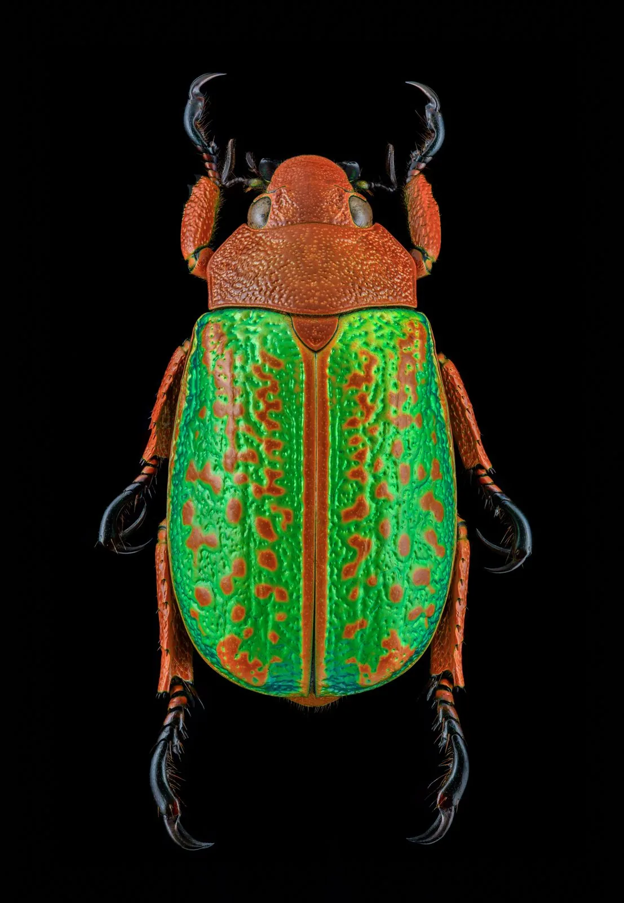
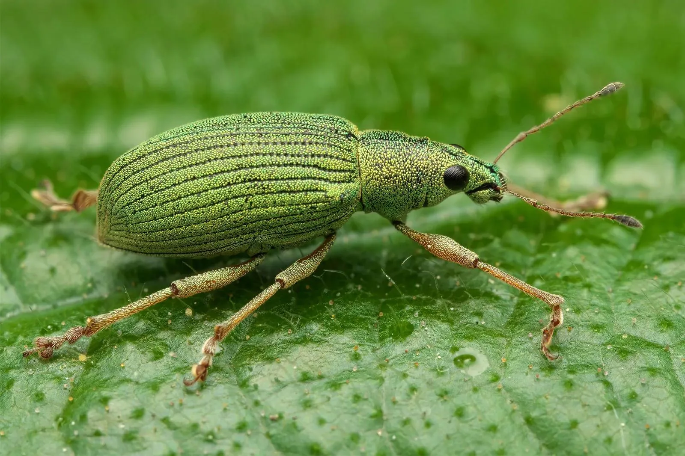
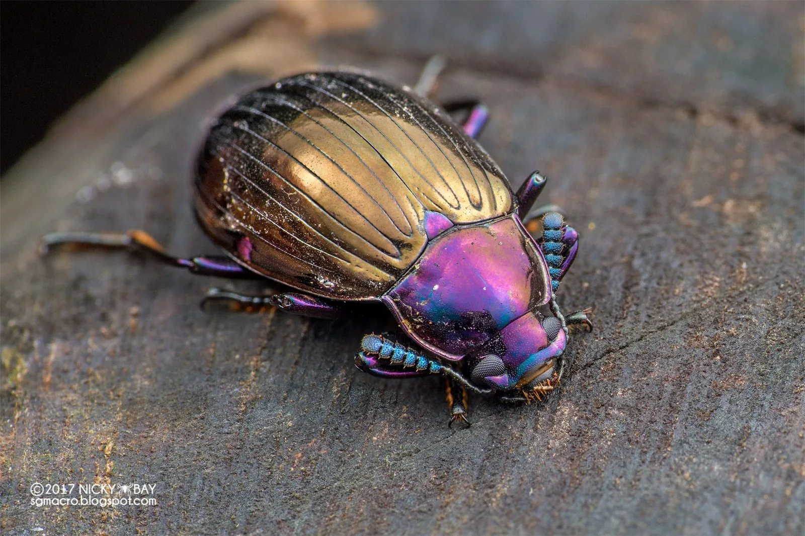
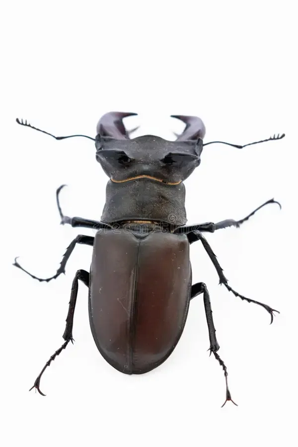
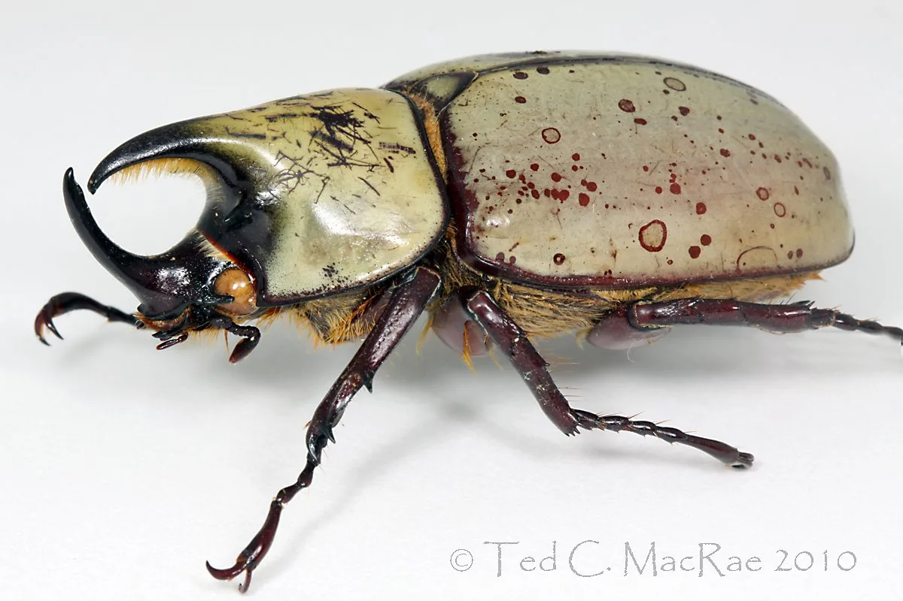
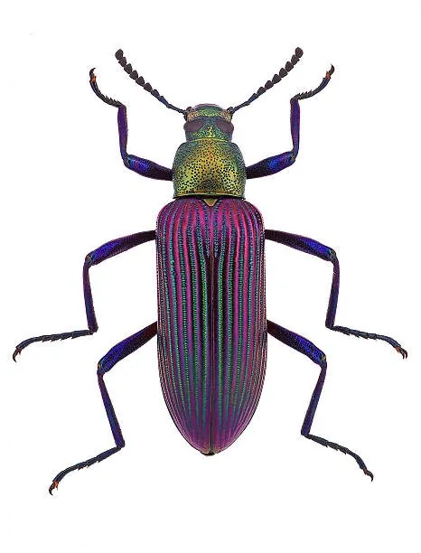